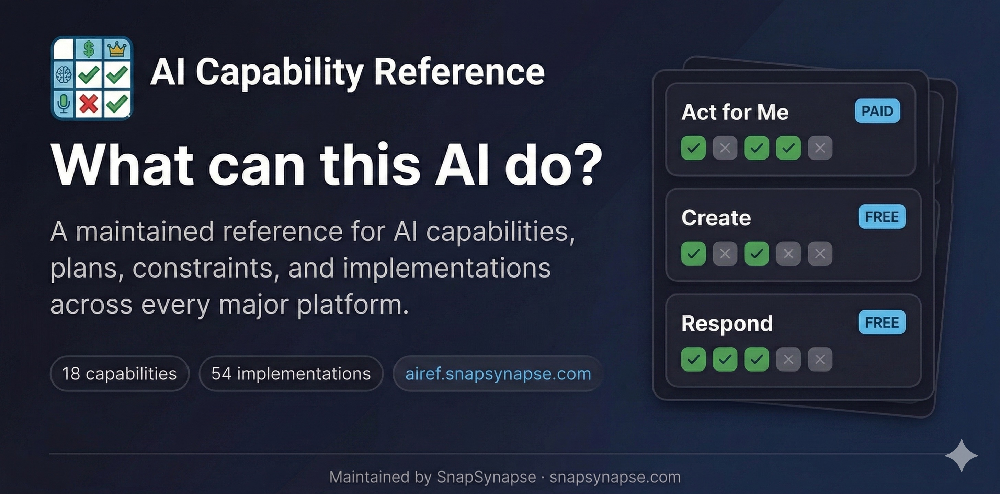

AI Capability Reference
Previously known as "AI Feature Tracker." Renamed to "AI Capability Reference" in February 2026 to better reflect the project's ontology-first, capability-centric approach. Plain-English reference for AI capabilities, plans, constraints, and implementations.
What is this?
A single source of truth for answering questions like:
- "Is ChatGPT Agent Mode available on the $8/mo plan?" (No, Plus or higher)
- "Can I use Claude Cowork on Windows?" (Not yet, macOS only)
- "Which open/self-hosted models can I realistically run on my hardware?" (Depends on VRAM)
Built for fellow AI facilitators, educators, designers, and anyone who needs accurate, current information about AI tool availability.
Scope
This reference covers:
- major consumer-facing AI products with meaningful public usage or visibility
- commercially available AI systems that ordinary people can sign up for and use
- important self-hosted/open model families and runtimes that people can realistically run or choose locally
This reference does not aim to catalog every enterprise AI vendor, infrastructure platform, or niche model release.
The ~1% market share idea is used here as a practical inclusion heuristic, not a strict ontology field, because public usage data is inconsistent and is usually measured at the product level rather than the model level.
Platforms Covered
| Platform | Vendor | Features Tracked |
|---|---|---|
| ChatGPT | OpenAI | Agent Mode, Canvas, Voice, Sora, DALL-E, Search, Deep Research, Codex, Custom GPTs |
| Claude | Anthropic | Code, Cowork, MCP, Connectors, Projects, Artifacts, Extended Thinking, Vision |
| Copilot | Microsoft | Office Integration, Designer, Vision, Voice, Agent Builder |
| Gemini | Advanced, NotebookLM, AI Studio, Deep Research, Gems, Workspace, Imagen, Veo, Live, Project Astra | |
| Perplexity | Perplexity AI | Comet Browser, Agent Mode, Pro Search, Focus, Collections, Voice |
| Grok | xAI | Chat, Aurora (images), DeepSearch, Think Mode, Voice |
| Meta | Meta | Llama 3.3, Llama 4 |
| Mistral | Mistral | Codestral, Mistral Large/Nemo, Mistral Small 3 |
| DeepSeek | DeepSeek | DeepSeek V3 / R1 |
| Alibaba | Alibaba | Qwen 2.5, Qwen 3, Qwen 3.5, Qwen-Coder |
| Ollama | Ollama | Self-hosted runtime product |
| LM Studio | LM Studio | Self-hosted runtime product |
Features
- Plan-by-plan availability — See exactly which tier unlocks each feature
- Capability-first view — Browse plain-English capabilities in addition to the feature view
- Platform support — Windows, macOS, Linux, iOS, Android, web, terminal, API
- Talking points — Ready-to-use sentences for presentations (click to copy)
- Category filtering — Voice, Coding, Research, Agents, and more
- Price tier filtering — Find features at your budget
- Provider toggles — Focus on specific platforms
- Dark/light mode — Toggle for your preference
- Permalinks — Link directly to any feature with shareable URLs
- Shareable URLs — Filter state preserved in URL parameters
- Maintainer-led — Managed by SnapSynapse; public issues and PRs welcome
Accessibility
This site is designed to meet WCAG 2.1 AA standards:
- Keyboard navigation — Full keyboard support with ↑/↓/j/k to navigate cards, Enter to copy, Tab to move between interactive elements
- Skip link — "Skip to main content" link for screen reader users (visible on focus)
- Focus indicators — Clear 2px accent-colored outlines on all interactive elements
- Color contrast — Minimum 4.5:1 contrast ratio for all text in both light and dark modes
- Reduced motion — Animations and transitions disabled when
prefers-reduced-motionis enabled - Touch targets — Minimum 44px touch targets on mobile for easier tapping
- ARIA attributes — Live regions announce filter count changes, decorative images marked with
aria-hidden - Semantic HTML — Proper heading hierarchy, landmark regions, and button/link semantics
If you're interested in accessibility tooling, check out skill-a11y-audit — a companion project that automates WCAG audits as a reusable AI skill. If you like what you see here, you'll love that.
Update Cycle
Data in this reference is kept current through a semi-automated process combining scheduled AI verification with human review.
How it works:Every Sunday, a four-model cascade queries Gemini, Perplexity, Grok, and Claude to cross-check all tracked features — pricing tiers, platform availability, status, gating, and regional restrictions. To prevent provider bias, models are skipped when verifying features from their own platform (e.g. Gemini is not asked about Google features). A change is only flagged when at least three models agree on a discrepancy. Confirmed changes are surfaced as GitHub issues or pull requests for human review — nothing is auto-merged.
Link integrity is checked separately every Wednesday, catching broken or redirected source URLs across all platforms.
Features are also marked with a Checked date. Anything not re-verified within 30 days is treated as stale and prioritised in the next run.
How to Contribute
Found outdated info? Want to add a feature? See CONTRIBUTING.md.
Quick version:
1. Edit the relevant record in data/platforms/, data/model-access/, data/products/, or data/implementations/
2. Include or preserve the evidence source link
3. Run node scripts/sync-evidence.js
4. Run node scripts/validate-ontology.js
5. Submit a PR
License
MIT - see LICENSE
Credits
Created by SnapSynapse for the AI training community.
With help from Claude Code, of course.
Found an error? Open an issue or submit a PR!